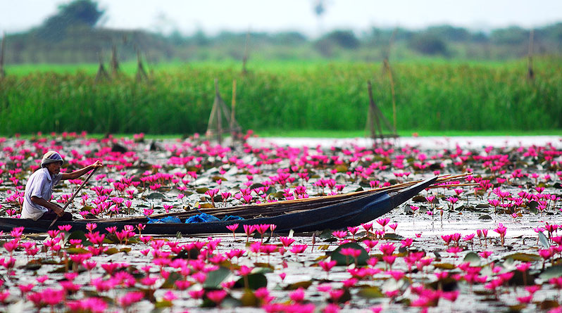
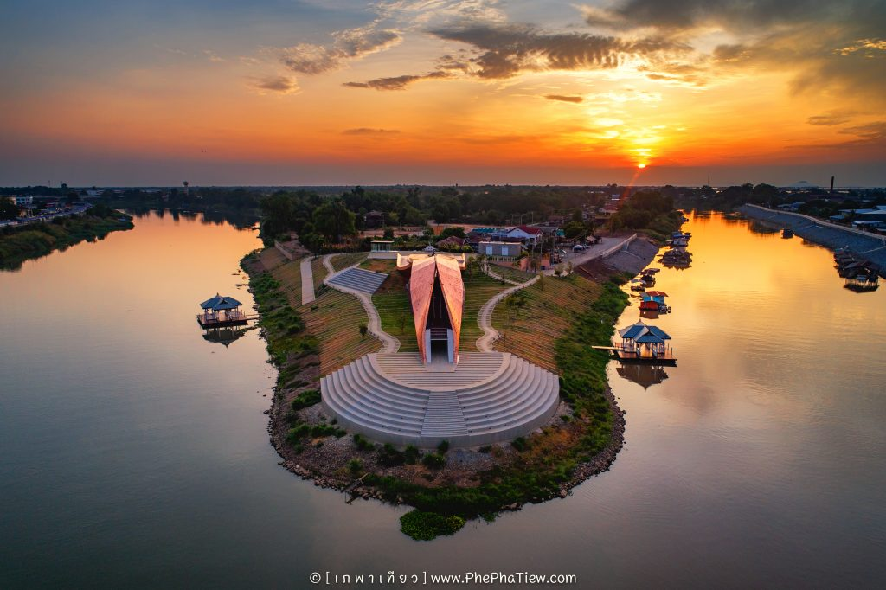
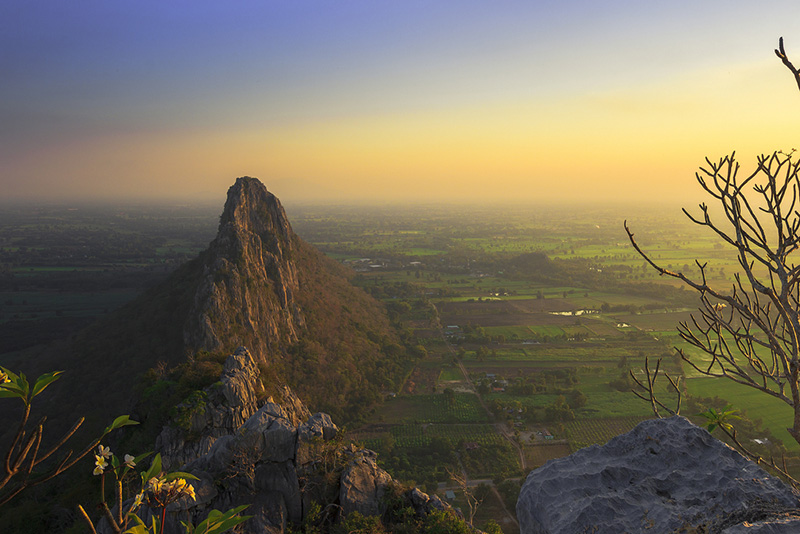
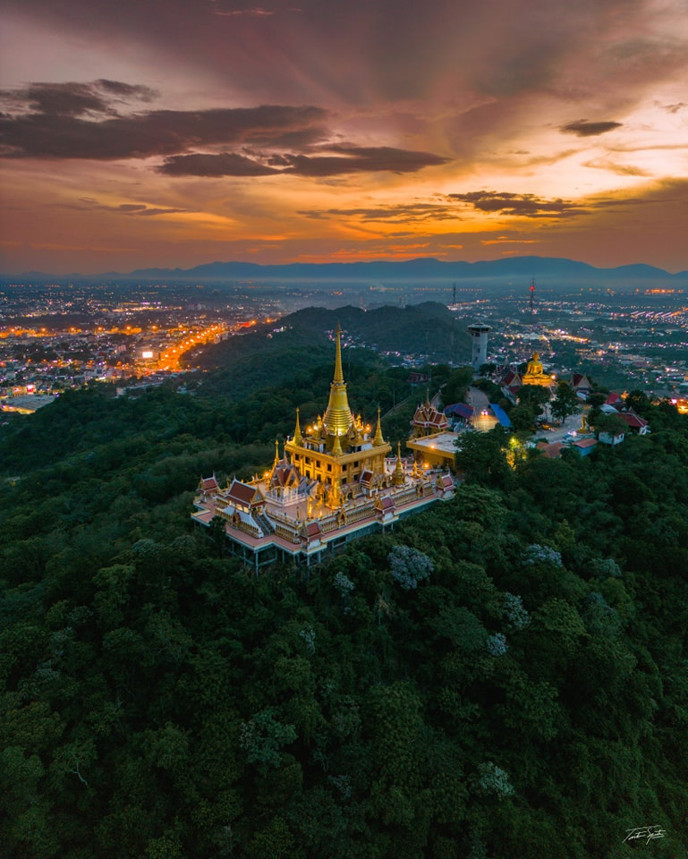
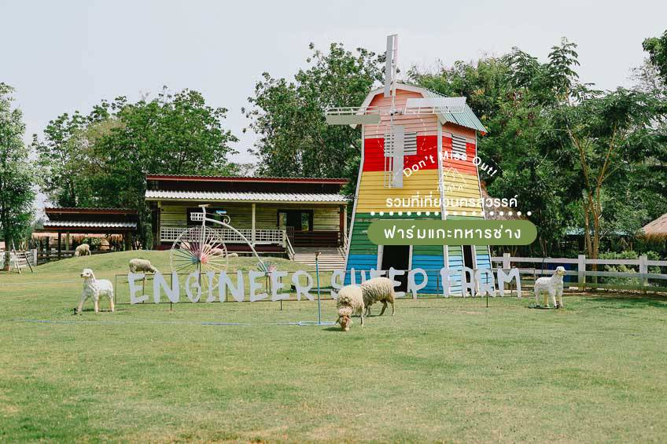

ข้อมูลท่องเที่ยวจังหวัด

1.บึงบอระเพ็ด
สถานที่ท่องเที่ยวนครสวรรค์ชื่อดังที่พลาดไม่ได้ บึงบอระเพ็ด เป็นบึงทะเลสาบน้ำจืดที่ใหญ่ที่สุดในประเทศไทย ครอบคลุมพื้นที่ 3 อำเภอในนครสวรรค์...

2.พาสาน
พาสาน” มีที่มาจากคำว่า “ผสาน” คือ การรวมกัน แต่ “พาสาน” คือ การพาคนเข้าไปสานให้เกิดการผสมผสานกันระหว่าง คน สถานที่ และช่วงเวลา...

3.เขาหน่อ เขาแก้ว
ภูเขาหินปูนที่มีทิวทัศน์สวยงาม สถานที่ท่องเที่ยวนครสวรรค์ที่ต้องเช็คอินอีกหนึ่งแห่งของนครสวรรค์ “เขาหน่อ”...

4.วัดคีรีวงศ์
สถานที่ท่องเที่ยวนครสวรรค์ที่แรกที่เราจะพาไปคือ วัดเก่าแก่ของจังหวัดนครสวรรค์ ที่สร้างขึ้นตั้งแต่สมัยปลายกรุงสุโขทัย...

5.ทุ่งปอเทือง
หากใครไปเยือนนครสวรรค์ในช่วงปลายปีถึงต้นๆ ปี บอกเลยว่าพิกัดสถานที่ท่องเที่ยวนครสวรรค์ ที่จะทำให้คุณได้ถ่ายรูปสวยๆ คือ ทุ่งดอกปอเทือง...